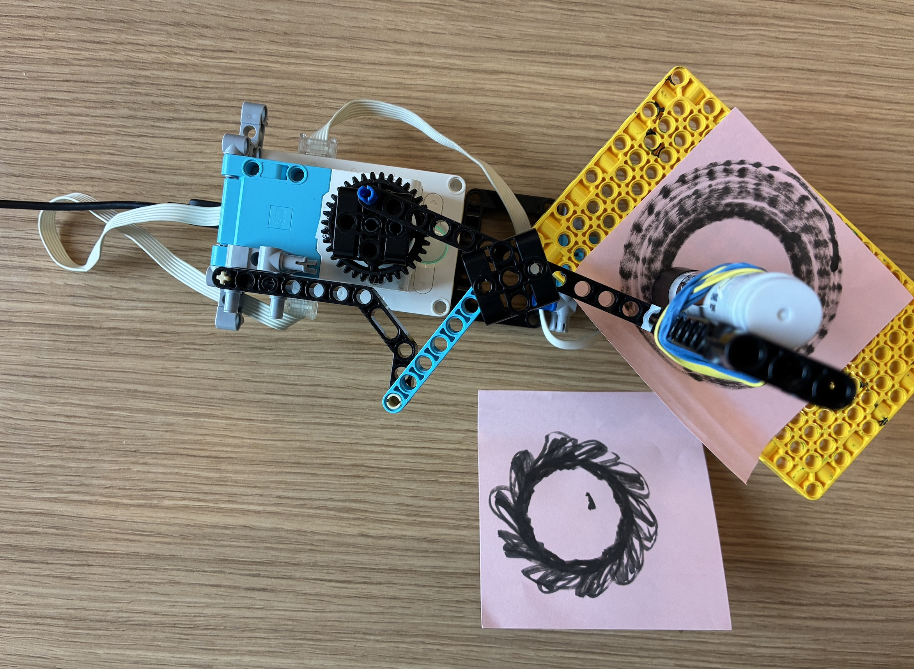

I created my spirograph drawing machine using the linkage mechanism that was provided during class. I made 2 total spining components, one with the pen mechanism and the other was the board itself was spinning. I was also able to find out that for a spirograph's offset you need to set the rotor speeds at an undivisible ratio thats very close to each other (eg, 71:70). What I also realized I could do was set the speed of the board to be super fast to create a more interesting shape.